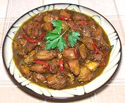

|
Country Captain - EnglishEngland | ||||
| Serves: Effort: Sched: DoAhead: |
4 main *** 2 hrs Yes |
It's from the same Indian origin as the famous Country Captain of the American Southeast. I pieced it together from scanty references, but "authenticity" is not compromised - there is no standard recipe. | |||
| For the American version see our recipe Country Captain, and for an original Anglo-Indian version see Country Captain - Anglo-Indian. For historical background see Historical Notes.. | |||||
|
|
2 ar ------ 1/2 12 4 1 ------ 2 4 2 1/3 1/4 1/8 ---- 2 2 1 |
# --- in oz cl --- in t t t t --- T c T |
Chicken meat (1) Oil, deep fry (2) -- Vegetables Ginger Onion Garlic Red Chili (3) -- Spice mix Cinnamon Cloves Curry Powder (4) Salt Pepper, black Cayenne (5) --------- Oil Stock, chicken Lemon Juice |
Prep - (20 min)
|